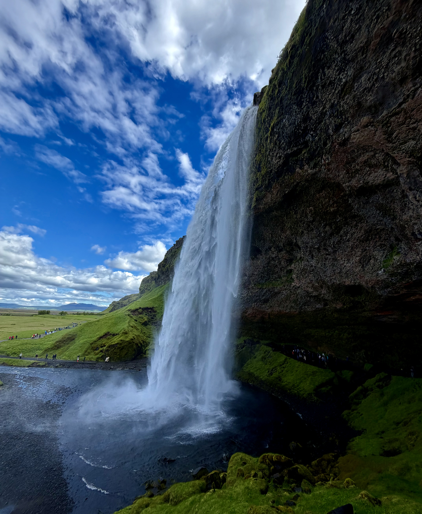
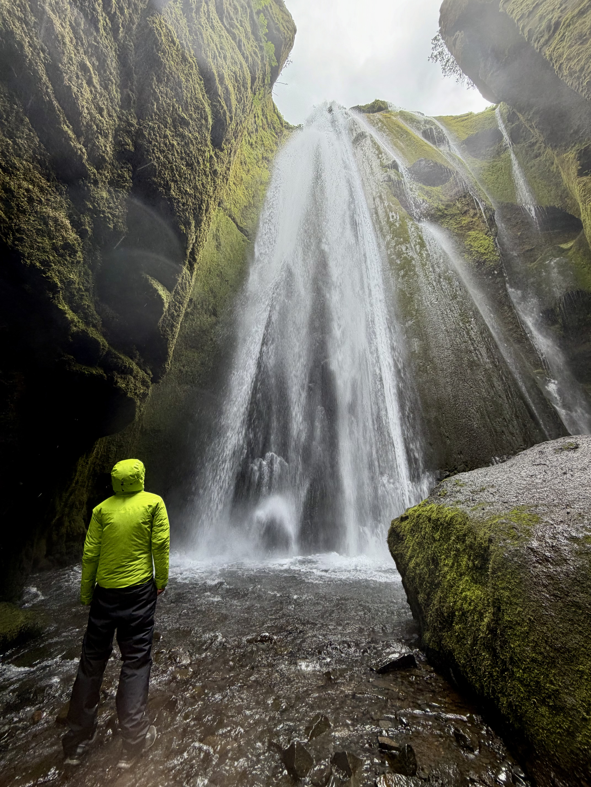

Gljufrafoss - often seen as the main attraction drawing in day tourists from reykjavik as well as those exploring the island by camper van.

Gljúfrabúi - a smaller sister fall to the famous gljufrafoss, just a short walk away contains an equally impressive fall that you can get up close to.